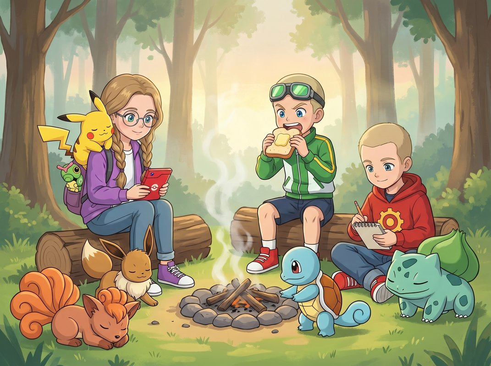
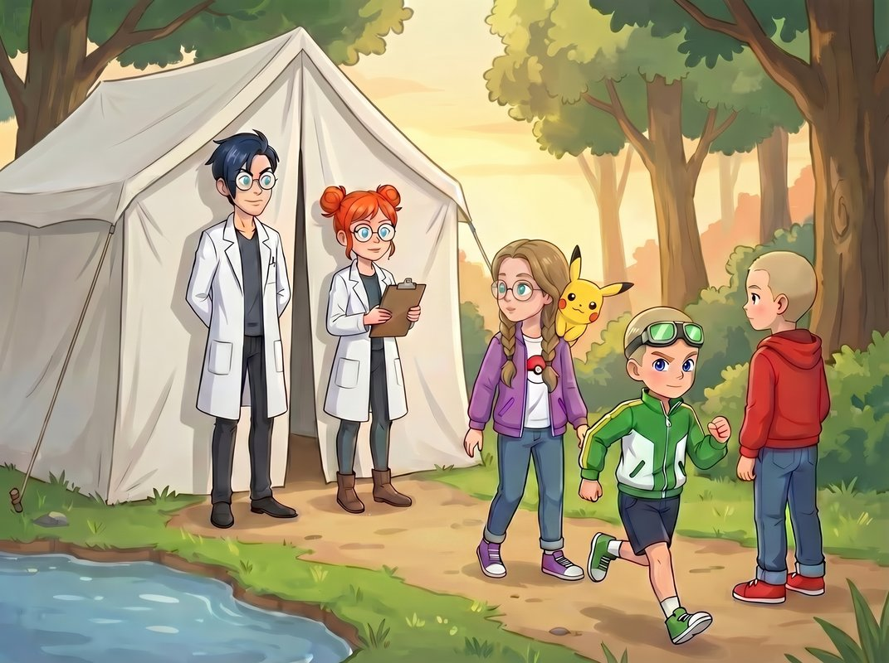
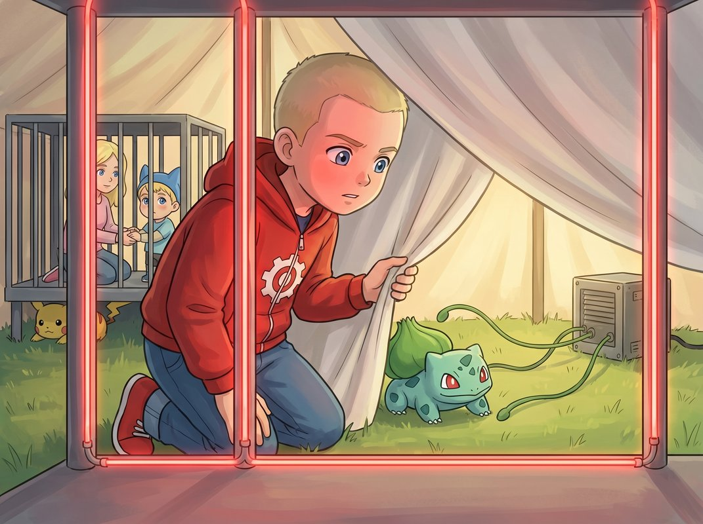
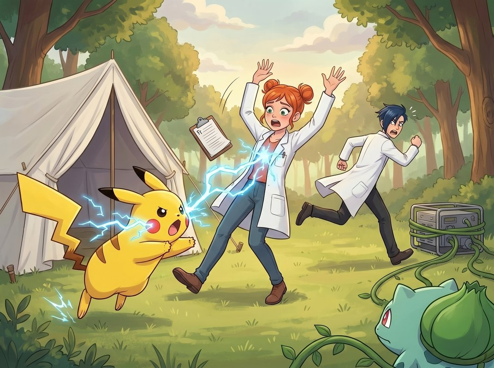
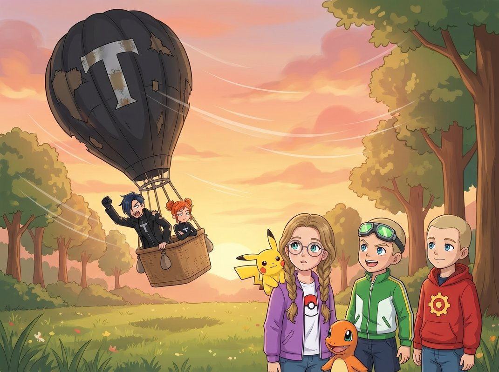
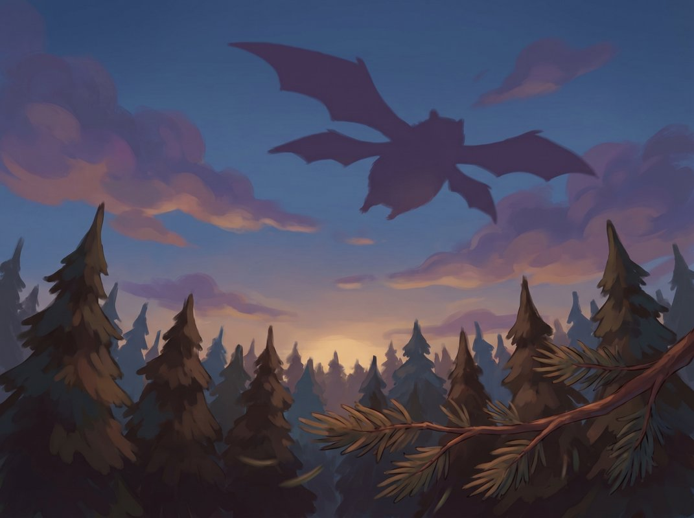
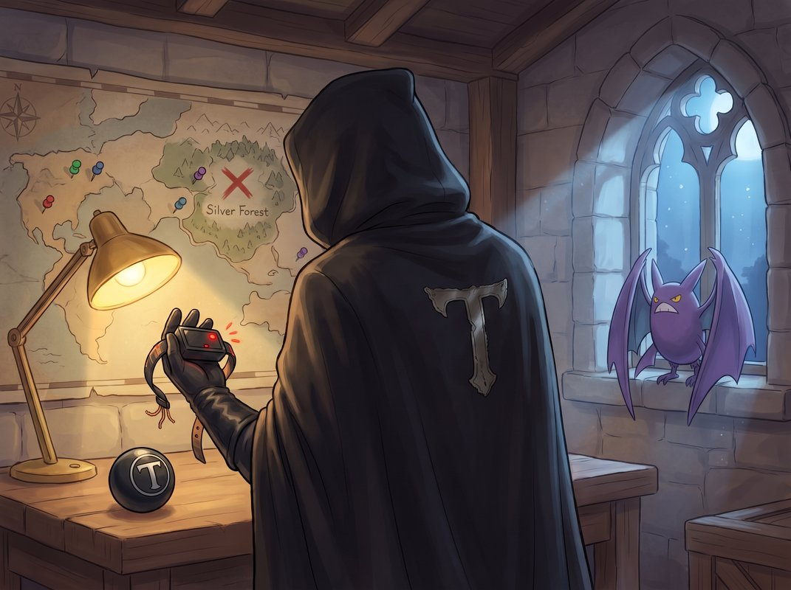

Сезон 1
Эпизод 9. «Ловушка Команды Тень»
Объявление на столбе

Костёр ещё дымился — тонкий дымок тянулся прямо в утреннее небо. Ветер спал. Пар от кружки поднимался ровно, как свеча.
Ромус сидел с блокнотом на коленях. Красная худи с шестерёнкой была расстёгнута на одну пуговицу — так удобнее дышать. Рядом, у ноги, Бульбазавр (Bulbasaur) тихо принюхивался к траве. Луковица на спине чуть-чуть покачивалась — Бульбазавр просто смотрел, как просыпается лес.
— Бульба, — Ромус посмотрел на него. — Пойдём со мной. Не в покеболе сегодня.
— Бульба? — Бульбазавр поднял голову.
— Хочу, чтобы ты посмотрел, как пахнет Громовой Город. Там другой воздух. Людей много.
Бульбазавр подумал. Кивнул серьёзно — как деловой партнёр.
Ромус убрал пустой покебол в карман.
Сквиртл (Squirtle) у костра уже проверял золу лапой — дежурство сдано, как всегда.
Кристи сидела с Покедексом на коленях. Косички — светло-каштановые, с ровным пробором — свешивались по плечам фиолетовой куртки. Пикачу (Pikachu) дремал у неё на плече. Катерпи (Caterpie) высунулся из-под ремешка её рюкзака — только голова и два маленьких усика.
— Ктер, — тихо сказал Катерпи. Это было его «доброе утро».
— Доброе, — кивнула Кристи. — Ты выспался? Там внутри не тесно?
— Ктер-ктер.
— Это значит «нет». Отлично.
Макстер сидел на бревне и жонглировал пятью круглыми камушками. Четыре взлетели в воздух одновременно — а пятый он попытался поймать и промахнулся. Камушек глухо шлёпнулся на мох у его ноги.
— Видали? — Макстер победно поднял четыре оставшихся. — Четыре из пяти. Это почти пять из пяти!
— Это четыре из пяти, — не отрываясь от блокнота, произнёс Ромус.
— Но почти!
— Четыре дня назад было два из пяти. Прогресс.
— Режим спокойного тренера, — важно заявил Макстер. — Сначала спокойствие. Потом жонглирование шестью камушками.
— Начни хотя бы с пяти, — отозвался Ромус. — Надёжно.
— А я с чего начал?
— С трёх.
— А-а. — Макстер задумался. Пятый камушек нашёл в мху. — Тогда да. Прогресс.
Кристи не подняла глаз от Покедекса, но уголки её губ дрогнули.
Иви (Eevee) у ног Кристи потянулся — не спеша, по очереди: сначала передние лапы, потом задние. Белый воротник взъерошился и лёг обратно, как будто Иви сам себя поправил. Сикстейлс (Vulpix) лежала рядом и следила за Пикачу взглядом судьи — шесть хвостов чуть подёргивались во сне.
Собрались быстро. Бульбазавр пошёл впереди рядом с Ромусом. Сквиртл, как всегда, вперёд-назад — проверял путь, как важный снабженец экспедиции.
Тропа вывела к грунтовой дороге. Пахло пылью, листьями и чем-то сладким, перезрелым — где-то в кустах лопались яблоки-падальцы. Издалека доносился низкий, ровный гул — большой город.
— Громовой Город, — Ромус остановился. — Полдня.
— А потом турнир! — Макстер подпрыгнул.
— А потом — регистрация. До турнира ещё две недели.
— Ну, почти турнир.
Иви на руках у Кристи принюхался и фыркнул. Запах дороги ему не понравился.
Через километр дорога разветвилась. Прямо — в Громовой Город. Направо — тропа уходила вниз, в маленькую лощину. На развилке стоял деревянный столб, и на столбе был прибит яркий плакат. Свежий — края ещё не успели загнуться.
Макстер рванул к плакату первым.
Кристи и Ромус подошли ближе.
ЭКСПЕРИМЕНТАЛЬНЫЕ ШТАММЫ — СЕГОДНЯ ТОЛЬКО!
ПОДХОДЯТ ТОЛЬКО ОПЫТНЫМ ТРЕНЕРАМ.
(стрелка вниз, в лощину)
— Редкие! — Макстер ткнул пальцем. — Экспериментальные! Опытным! Это три причины пойти!
— Это одна причина, повторённая три раза, — отозвался Ромус.
— Это ещё убедительнее.
Кристи молчала. Смотрела на плакат. Краска на нём была свежая — чёрная с красным, буквы прыгали вкривь-вкось.
— Редких покемонов бесплатно не раздают, — тихо произнесла она. — Редкие — это редкие.
— Ну может, кто-то захотел быть добрым?
— Редкие — значит их мало и их трудно поймать, — спокойно объяснила Кристи. — А не значит «у меня ими полный шатёр, берите даром».
— Но написано же!
— Написано что угодно можно. Смотри на буквы. Они разной высоты. Это писали быстро. И криво.
— А солидные объявления пишут медленно и ровно?
— Солидные — да. А это — нет.
— Кто-то бесплатно даёт двум десяткам тренеров редких покемонов? — Ромус подошёл к столбу сбоку, посмотрел на обратную сторону плаката. — Заметили? Буквы ровные только спереди. Сзади — клеем капнули криво.
— И что?
— Ночью вешали. В темноте.
— Или утром, — добавила Кристи. — Очень рано. Когда ещё никто не ходил.
Бульбазавр у ноги Ромуса поджал луковицу. Это у него всегда так — когда Ромус напрягался, луковица чуть сжималась, как будто тоже прислушивалась.
— Я всё равно пойду посмотрю, — Макстер уже зашагал вниз по тропе. — Если там и правда редкие — нельзя пропустить. Если нет — вернусь.
— Макстер, — начала Кристи.
— Пять минут!
Пикачу на плече Кристи открыл один глаз. Посмотрел вслед Макстеру. Посмотрел на Кристи. Щёки дрогнули — одна искорка.
Ромус вздохнул. Закрыл блокнот.
— Пошли. Он один не вернётся.
Тропа заворачивала. За поворотом, на поляне у пруда, стоял большой белый шатёр. Новенький — ткань ещё пахла складом, как новые кроссовки. У входа — две фигуры в белых халатах. Они улыбались.
Широко. Слишком широко.
Белые халаты

Высокий парень в халате шагнул навстречу. Чёрные волосы прилизаны гелем на пробор, на носу — очки с молочно-белыми стёклами: глаз за ними не видно. Рядом — девушка в таком же халате и с пучками рыжих волос, собранными в два высоких хвоста. В руках — планшет с бланком.
— Добрррро пожаловать! — мужчина раскинул руки. — Институт Экспериментального Покемоноведения приветствует опытных тренеров!
— Очень опытных, — кивнула девушка. — Самых опытных.
Макстер просиял.
— Это мы!
Кристи замерла. Рассматривала их улыбки.
— Вы зачем так улыбаетесь? — спокойно спросила она.
Мужчина моргнул.
— Простите?
— Нормальные люди так не улыбаются. У вас щёки должны болеть.
Девушка быстро глянула на мужчину. Мужчина растянул улыбку ещё шире.
— Это наука! Мы всегда рады науке!
— Кристи, — Макстер потянул её за рукав. — Пусть они радуются. Где покемоны?
— Макстер, по-моему, это…
Ромус тихо, в ухо Кристи:
— Их ботинки.
— Что — ботинки?
— Посмотри. У парня халат белый. А ботинки — в грязи и листьях. Как будто он по лесу шёл всю ночь. Учёные в белых халатах в грязи не ходят.
— Макстер, стой!
Но Макстер уже прошёл мимо них и зашёл в шатёр.
Внутри — металлическая клетка на четырёх коротких ножках. Большая, высокая, с толстыми серыми прутьями.
В клетке — несколько покемонов: один Раттата (Rattata), один Зигзагун (Zigzagoon), один Хутхут (Hoothoot) — сжался в угол и таращился круглыми глазами. Все тихие. Как будто уставшие.
— Смотрите! — Макстер повернулся. — Они и правда тут! Ребят, идите сюда, тут…
ХРЯСЬ.
Сверху опустилась вторая клетка. Металлическая решётка с гудящими красными кольцами на концах прутьев.
Кольца пульсировали — как лампочки, только не свет, а низкий гул. «БЗЗЗ. БЗЗЗ.»
Макстер оказался внутри.
— Э… — Макстер схватился за прутья. Отдёрнул руку — кольца щипали. — Ой!
Кристи и Ромус бросились к шатру. Тот же «ХРЯСЬ» — и вторая клетка упала прямо вокруг них.
Пикачу едва успел спрыгнуть с плеча — проскользнул между прутьями в последний момент и тут же нырнул в узкую тень под соседней клеткой, где сидели дикие покемоны. Прижался к металлическому основанию. Замер.
Щёки дрогнули — хотели искрить. Но Пикачу зажмурился и сдержал разряд. Искры шевельнулись внутри и погасли. Он вжался в тень ещё плотнее.
Кристи едва-едва двинула губами, глядя прямо перед собой, не в его сторону:
— Тихо. Сиди тихо. Никто не видит.
Иви, Сикстейлс и Катерпи остались внутри — в рюкзаке и на плечах. Бульбазавр снаружи — он шёл рядом с Ромусом и в шатёр не зашёл. Сквиртл и Чармандер успели юркнуть в свои покеболы за секунду до падения решётки.
Пикачу под соседней клеткой сидел неподвижно. Только хвост чуть дрожал — от злости, которую он сам себе запретил выпускать.
Макстер в другой клетке пинал прут.
— А если так?
«БЗЗЗ!» — кольцо дало разряд. Макстера отбросило на шаг.
— Не так.
Мужчина и девушка в халатах сняли молочно-белые очки. Переглянулись.
— Сработало, — произнёс мужчина своим нормальным голосом. — Сработало, Фокс.
— В третий раз из четырёх. Почти рекорд.
— Дарк! — Макстер распахнул рот. — Это ВЫ?!
— Халаты, Макстер, — вздохнул Ромус. — Я заметил пятнадцать минут назад.
— И промолчал?!
— Хотел посмотреть, на сколько хватит халатов.
Дарк расплылся в настоящей улыбке — уже не натянутой.
— Именно! Мы меняем тактику! Раньше мы ловили покемонов. Теперь… — он победно вскинул руку, — ловим тренеров! Зачем ловить по одному, если можно сразу с хозяевами!
Фокс, всё ещё с планшетом:
— Это… не то же самое, вообще-то.
— Почти!
— Ты хотел сказать «почти», да.
— Да. Я хотел. Просто торопился.
Макстер попробовал достать покебол Чармандера. Нажал кнопку — покебол мигнул красным, как будто пытался открыться, но тут же погас. Кольца загудели громче.
— Покеболы не работают, — хрипло сказал Макстер.
— Совершенно верно! — Дарк кивнул. — Электрическая блокада! Маленькие разряды в кольцах глушат сигнал покебола. Мой собственный дизайн! Ну, вообще-то, — он посмотрел на Фокс, — почти мой.
— Командор подсказал схему, — Фокс не подняла головы от планшета.
— Детали я сам! Винтики! Я прикручивал!
— Ты прикручивал три раза. Первые два были вверх ногами.
— ЗАТО ТРЕТИЙ РАЗ БЫЛ ПРАВИЛЬНО.
Кольца снова гуднули. Дарк вздрогнул, посмотрел наверх, пригладил волосы.
Ромус тем временем стоял тихо. Смотрел. Его глаза двигались от прута к пруту, от кольца к кольцу, потом — в дальний угол шатра, где ткань чуть отставала от земли.
Он ничего не сказал.
Слева, откуда-то из глубины шатра, раздался тихий звук. Всхлип. Маленький, детский.
Кристи нахмурилась. У диких покемонов не бывает детских всхлипов.
Кристи повернулась.
За ещё одной решёткой — дальней, которую они не заметили сразу, в глубине шатра, за клеткой диких покемонов — сидел маленький мальчик. Лет семи. В синей шапке с ушками. Глаза красные. Щёки в засохших слезах.
— Ты кто? — тихо спросила Кристи.
Мальчик всхлипнул.
— Ни… Нико.
— Ты давно тут?
— С ве-чера.
— У тебя есть покемон?
Мальчик покачал головой.
— Я хотел выбрать. Пришёл сюда. А тут… это.
Кристи подвинулась вплотную к решётке, разделявшей их.
— Спокойно, Нико. Я знаю, что делать.
Нико посмотрел на неё большими глазами.
— Правда?
Кристи замерла на полсекунды.
— Сейчас узнаю точно.
Лозы и искры
Кристи села на пол прямо у решётки между её клеткой и клеткой Нико. В узкой тени под соседней клеткой, в шаге от них, она боковым зрением видела маленькую жёлтую мордочку — Пикачу лежал неподвижно, одни глаза блестели. Она не повернулась к нему. Нельзя.
Катерпи из-под ремешка рюкзака пискнул:
— Ктер-ктер-ктер.
— Тише, маленький, — Кристи провела пальцем по его усикам. — Ты со мной. Ты в безопасности.
Она посмотрела на Нико через решётку. Он сжимал колени обеими руками.
Кристи медленно просунула руку через зазор между прутьями. Не сказала ничего. Просто ладонью вверх.
Нико посмотрел на её ладонь. Потом на её лицо.
Потом протянул свою — маленькую, холодную — и вложил в её руку. Кристи сжала. Один раз. Тихо.
— Мы тебя не оставим, — произнесла она. — Ни за что.
Нико медленно выдохнул. В первый раз за минуту.
— Ты откуда? — тихо спросила Кристи.
— Из Колесовки. Это деревня за лесом.
— Сколько шёл?
— Два дня. Папа проводил до дороги. Сказал — дальше сам.
— К Дубинскому?
— Ага. Чтобы покемон.
Кристи кивнула. Не улыбнулась, не похвалила. Просто кивнула — один раз, как Пикачу.
— И ты пришёл сам.
— Ещё не дошёл. — Нико шмыгнул носом.
— Мы дойдём, — сказала Кристи спокойно. — Вместе.
Макстер из своей клетки смотрел на эту сцену. Рот открыт, но без слов — впервые за неделю. Он тихо сел на пол и слушал.
Ромус у своей стенки клетки наклонился к прутьям.
Сейчас не время читать записи. Сейчас — смотреть.
Он смотрел. Видел гудящие кольца на прутьях.
Видел замок на двери клетки — изнутри он был из пластика, тонкая пластиковая накладка на дужке. Ромус посмотрел на замок дважды. Запомнил.
Потом его взгляд скользнул ниже — к полу. Толстый чёрный кабель выходил снизу клетки, уходил по земле под ткань шатра и исчезал наружу.
В дальнем углу шатра край ткани был приподнят на десять сантиметров — там, где крепление оторвалось от колышка. В эту щель видно было траву. Траву, провод, и — дальше — что-то металлическое, квадратное, низко гудящее.
Генератор.
Вот оно. Связь.
Кольца питались от генератора снаружи. Блокировка клетки шла по проводу — значит, оборвать провод = снять блокаду.
А Бульбазавр был снаружи.
Ромус медленно повернул голову. Не резко — чтобы не насторожить Дарка.
Бульбазавр стоял у шатра. Присел в траву — его почти не было видно. Только кончик луковицы чуть-чуть выглядывал из стебельков. Умница. Сам понял, что надо спрятаться.
Ромус едва шевелил губами.
— Бульба.
Бульбазавр повёл одним глазом — увидел.
— Провод. У генератора. Снаружи. Рви.
Бульбазавр моргнул. Один раз.

Дарк у клетки Макстера объяснял Фокс какую-то схему, размахивая руками. Фокс что-то записывала в планшет. Спиной к Ромусу.
Кристи заметила взгляд Ромуса в сторону щели. Проследила. Увидела Бульбазавра.
Секунду ничего не изменилось.
Кристи смотрела на Нико, не поворачивая головы. Но её губы едва-едва двигались — для Пикачу в тени:
— Пика. Видишь Фокс?
Пикачу не пошевелился снаружи. Только глаза блеснули — увидел.
— Ещё не бей. Жди меня.
Пикачу моргнул в тени. Один раз. Медленно. Понял.
Щёки остались тёмными. Он держал разряд в себе — как воду в ладонях.
Ромус снова повернулся к Бульбазавру.
— Давай.
Бульбазавр выпустил одну длинную лозу. Она поползла по земле беззвучно, как зелёный ручеёк — к самому генератору.
Нашла торчащий из него чёрный провод. Обвилась вокруг. Подождала.
Дарк закончил объяснять схему.
— Итак, Фокс! Что дальше?
— Дальше — доклад Командору.
— Верно! А потом?
— Потом… — Фокс подняла голову от планшета и замерла.
Она смотрела наружу через приоткрытый полог шатра. Туда, где зелёная лоза только что туго обвилась вокруг провода у самого генератора.
— Дарк, — тихо сказала она.
— Что?
— Посмотри на генератор.
Дарк посмотрел. Увидел.
— ЛОЗА?!
Он рванул к выходу из шатра. Фокс за ним — планшет полетел на землю.
Пикачу. Кристи не успела шепнуть «пора» — Пикачу уже метнулся. Выстрелил из тени под соседней клеткой, будто сжатая пружина наконец отпустилась. Проскочил под полог шатра, как рыжая молния. В щель между ног Дарка. Выскочил наружу — прямо на Фокс. Она ничего не услышала заранее: искр не было — Пикачу копил их всё это время.

— Thunder Shock!
Короткий, резкий. Голубая вспышка прошла Фокс по плечам.
— АЙ! — Фокс присела.
— Quick Attack!
Пикачу врезался ей прямо в колени. Фокс села на землю с мягким «бух».
Дарк оглянулся:
— Фокс?!
— Иди к генератору! Забудь меня!
Дарк рванул. Почти добежал.
В этот момент лоза Бульбазавра напряглась. Хрусть. Провод от генератора к клетке — порвался.
«БЗЗ-зз-зз-зз…» — кольца на прутьях один за другим погасли. Гул пропал.
Тишина.
В этой тишине Ромус первым достал из кармана покебол. Проверил — кнопка нажалась нормально, красный светодиод ровный. Блокада снята.
— Сквиртл.
Красная вспышка. Сквиртл появился у ноги Ромуса.
— Сквир?
— Замок. На двери клетки. Water Gun. Точно в прорезь.
Сквиртл прицелился — и выпустил короткую, очень точную струю воды прямо в дужку замка. Вода попала в прорезь — и пластиковая накладка отлетела. Замок щёлкнул.
Дверь открылась.
— Ромус, — выдохнула Кристи. — Ты же не знал, что так можно.
— Пока ты говорила с Нико, я разглядывал замок. Изнутри у него пластиковая накладка. Вода пройдёт куда металл не пустит.
— Ты гений.
— Я просто смотрел. Ты так всегда делаешь.
Он не сказал последнее вслух. Только подумал.
И снова ветер
Они выбежали из шатра. Макстер на бегу нажал кнопку покебола:
— Чармандер, со мной.
Красная вспышка — и Чармандер (Charmander) выскочил у его ноги. Хвост бодро горел — рад был выйти после часа в покеболе.
Макстер обошёл пустые клетки и подошёл к дальней, где сидел Нико. Отодвинул решётку. Осторожно взял мальчика за руку:
— Пошли, малой. С нами.
Нико кивнул. Впервые улыбнулся — маленько, но улыбнулся.
Дарк ползал у генератора, пытался соединить обратно два конца провода. Искры летели ему в нос.
— Я починю! Я ПОЧИНЮ!
Фокс подходила к нему, прихрамывая — Quick Attack Пикачу был чувствительный.
— Дарк, бросай. Шар.
— У меня план!
— План отменён.
— У меня другой план!
— Тоже отменён.
Пикачу на плече Кристи — он уже вернулся, прыгнул туда, как только она выбежала — выгнул спину. Щёки искрили так, что светился весь хвост.
— Давай, Пикачу.
— Пика… ЧУ!
Громадный голубой разряд ударил между Дарком и Фокс. Земля под ними вспучилась — будто кто-то подбросил их снизу. Они взлетели.
И упали — аккуратно, очень аккуратно — в корзину большого чёрного воздушного шара, который стоял в лощине за шатром. С серебряной, потёртой буквой «Т».
Шар медленно начал подниматься.
— Есть! — Дарк высунулся из корзины и потряс кулаком. — На следующий раз мы…
Ветер.
Тонкий, ровный — как будто кто-то дунул на горячий чай. Он толкнул шар не на восток, куда Дарк и Фокс, судя по всему, хотели. А на юг. В сторону от их базы, в сторону больших синих гор.
Дарк посмотрел на компас в корзине. Потом на ветер. Потом на Фокс.
— Ветер не тот.
— Я вижу.
— Ты не проверила ветер!
— Ты не проверил.
— Я был занят наукой!
— Ты прикручивал колышки. Три раза. Неправильно.
— ЗАТО…
— …третий раз правильно. Да, я знаю.
Шар уже уплывал. Всё дальше, всё выше.
— Мы улетаем снооооооова! — проорал Дарк.
— Мы опять улетаем снооова! — поправила Фокс. — Он уже так кричал в прошлый раз.
— НО В ДРУГУЮ СТОРОНУ!

Нико, стоящий у ноги Кристи, засмеялся. Настоящим, тонким детским смехом — впервые за вечер и утро.
Макстер поднял голову и долго смотрел на шар.
— Знаешь, Ромус, — отозвался он тихо. — Старик у реки был прав.
— Про ветер?
— Про ветер.
Макстер нажал кнопку покебола:
— Пиджеотто, выходи.
Красная вспышка. Пиджеотто (Pidgeotto) появился, уселся на плечо Макстера — принципиально выше всех остальных. Расправил крылья. Потом сложил обратно.
Герои собрали вещи. Обошли шатёр — убедились, что в настоящей клетке с покемонами замок тоже держится на пластике; Сквиртл ещё раз применил Water Gun, дверь открылась, Раттата, Зигзагун и Хутхут выскочили и разбежались по лесу.
— Спасибо, — сказала Кристи вслед. Им не ответили. Они покемоны. Они не благодарят.
Макстер посмотрел на неё.
— А если бы ответили?
— Было бы странно.
По дороге к ближайшему Покемон-центру Ромус подобрал с земли белый квадратный листок. Тот самый, который Фокс уронила, когда Пикачу ударил. Развернул.
На листке от руки была набросана небольшая схема. Круг, внутри — деревья. В углу — крестик.
Рядом, маленькими буквами: «Серебряный лес. Центр.» И всё. Больше — ничего.
Ромус долго смотрел на листок. Потом аккуратно сложил и убрал в блокнот.
— Что это? — спросил Макстер.
— План. Но не наш. Потом покажу.
В Покемон-центре Медсестра Джой (с Чанси у плеча) приняла Нико. Медсестра положила ему руку на голову, и Чанси передала ему большое розовое яйцо погладить.
Нико подержал яйцо. Потом посмотрел на Кристи.
— Я тоже буду тренером.
Кристи присела, чтобы их глаза были на одном уровне.
— Ты уже тренер.
— Но у меня нет…
— Тренер — это не тот, у кого есть покемон. Тренер — это тот, кто ждёт его. Ты ждал. Значит, ты уже.
Нико серьёзно кивнул. Один раз.
Как Пикачу, — подумала Кристи и улыбнулась.
Они вышли из Покемон-центра и пошли по тропе назад — к развилке.
Макстер шёл молча дольше обычного. Потом:
— Ромус.
— Да.
— Я бежал первый. Как всегда.
— Как всегда.
— И нас поймали.
— Да.
Пауза. Макстер подобрал с дороги палку, покрутил в руках.
— Значит, «первым» — это не всегда «правильно».
— Это прогресс. Четыре дня назад ты бы это даже не заметил.
— А сейчас заметил.
— Поэтому я и сказал — прогресс.
Макстер пнул камушек. Тот закатился в канаву и замер.
— Я ещё потренируюсь быть не первым.
— Не переусердствуй, — бросила сзади Кристи. — А то мы останемся без огня.
Макстер ухмыльнулся.
На выходе из Покемон-центра, уже у тропы, Ромус остановился. Посмотрел на плакат «Бесплатная раздача» — кто-то его уже снял и оставил у столба.
Наблюдать можно не только до боя. Можно и внутри него.
Это было новое. Не ошибка — добавление. Он будет и дальше собирать данные заранее. Но теперь он знает, что можно смотреть и тогда, когда всё уже происходит.
— Ромус, — позвала Кристи с тропы. — Мы идём.
— Иду.
Высоко над лесом, где небо уже стало совсем голубым, что-то большое и крылатое прошло беззвучно. Одна ветка качнулась, и снова замерла.

Тихая лаборатория
В полутёмной комнате с низким потолком на столе лежал маленький чёрный ошейник. На нём — красная лампочка.
Лампочка мигала медленно. Раз. Два. Пауза. Раз. Два.
Мужская рука в чёрной перчатке поднесла ошейник к свету. Осмотрела соединения — тонкие медные дорожки, крошечные винтики.
— Ловушка снова провалилась, — произнёс голос. Тихо. Спокойно. Без злости. — Эти трое… они не случайность.
На стене висела большая карта региона. В разные точки были воткнуты цветные булавки. Самая яркая — красный крест над пометкой «Серебряный лес».
Мужчина — лицо в тени, видно только подбородок и губы — снял с пояса чёрный покебол с серебряной буквой «Т». Поставил его рядом с ошейником.
— Нужна проверка. В малом масштабе.
Он развернулся к окну. За окном была ночь. Здесь, где была база, всегда была ночь.
На подоконник беззвучно сел Кроубат (Crowbat). Большие фиолетовые крылья сложились с мягким «вшух».
Мужчина не обернулся.
— Иди. Следи за ними.
Кроубат наклонил голову. Посмотрел на ошейник на столе. Потом на спину своего хозяина.
И вылетел в тёмный прямоугольник окна. Беззвучно.

Красная лампочка на ошейнике мигнула. Раз. Два.
Пауза.
Раз. Два.
Погасла.
Продолжение — в Эпизоде 10: «Неуловимый Абра».
Урок этого эпизода
Иногда важнее не то, что ты знал, а то, что видишь сейчас.